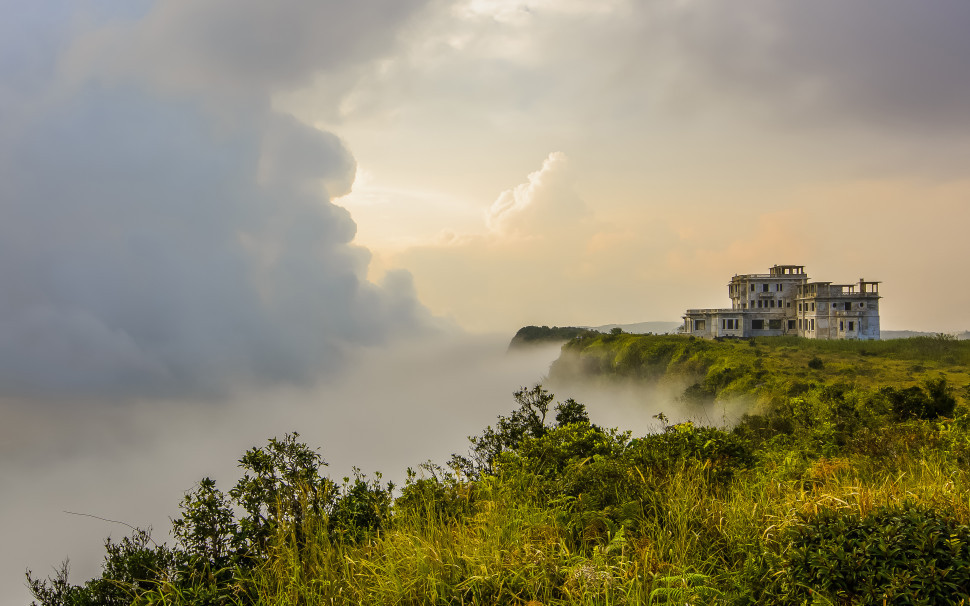

ភ្នំបូកគោ ល្បីឈ្មោះដោយសារតែអាកាសធាតុត្រជាក់ពេញមួយឆ្នាំ។ ភ្នំបូកគោជាទីកម្សាន្តធម្មជាតិដ៏សម្បូរបែបបំផុតមិនថាធម្មជាតិ អាកាសធាតុ ដំណើរកម្សាន្តរុករក ឬសម្រាកលម្ហែនោះទេ សុទ្ធសឹងតែអាចធ្វើឲ្យភ្ញៀវទេសចរមានអារម្មណ៍រីករាយស្រស់ថ្លា និងអនុស្សាវរីយ៍បំភ្លេចមិនបាន។ ភ្នំបូគោ គឺជាភ្នំមួយដែលស្ថិតនៅក្នុងខេត្តកំពត ភ្នំបូគោមានចម្ងាយ ៣២ គីឡូម៉ែត្រ គិតចាប់ពីផ្លូវជាតិលេខ៣ ដល់កំពូលភ្នំបូកគោហើយភ្នំបូកគោមានកំពស់ ១,១០១ម៉ែត្រ និងមានផ្ទៃដីសរុប ១៤ ០០០ហិចតា ដោយយោងតាមគណៈគ្រប់គ្រងភ្នំបូកគោ។
រមណីយដ្ឋាន ដែលមានកម្ពស់កប់ពពកមួយនេះ មានកន្លែងសម្រាប់កម្សាន្ត និងលំហែកាយជាច្រើន ដូចជាទឹកជ្រោះ ពពកវិល, ថ្មមុខយក្ស ឬអ្នកថែរក្សាព្រៃ, បឹងលើភ្នំ, វត្តសំពៅប្រាំ, ព្រះវិហារកាតូលិក ចាស់, ឡឺ បូកគោ ផាលេស (សណ្ឋាគារ ចាស់), ដំណាក់ស្លាខ្មៅ, ដំណាក់ព្រះបាទ មុនីវង្ស ឬដំណាក់ស្តេច, វាលស្រែ៥០០ និងកន្លែងសមាធិ ជាដើម។
ភ្នំបូកគោ សម្បូរដោយរុក្ខជាតិប្លែកៗ និងជាដែនជម្រកធម្មជាតិរបស់សត្វព្រៃ និងសត្វស្លាបជាច្រើនប្រភេទ។ តំបន់ទេសចរណ៍នៅឧទ្យានជាតិព្រះមុនីវង្ស«បូកគោ» មានតំបន់ទេសចរណ៍ធម្មជាតិ តំបន់ទេសចរណ៍វប្បធម៌ និងតំបន់ទេសចរណ៍ជំនឿ។